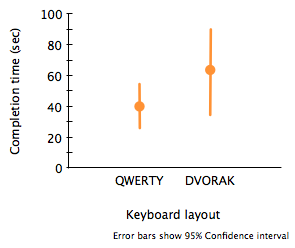
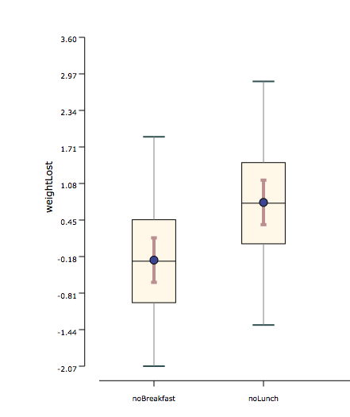

Welch's t-test is used when there are 2 conditions are compared and they are unpaired (i.e., between-groups factor). Welch's t-test is the alternative to unpaired t-test when homogeneity of variances is not met (i.e., the distributions have unequal variances). It still requires the distributions to be normal.
Conditions:
- Between-subjects experimental design
- Number of levels in the independent variable are two
- Number of independent variable is one
- Independent variable that is categorical (i.e., two or more groups)
- Dependent variable that is continuous (i.e., interval or ratio level)
- Cases that have values on both the dependent and independent variables
- Independent samples/groups (i.e., independence of observations)
- Random sample of data from the population
- Normal distribution (approximately) of the dependent variable for each group
- No outliers
Examples:
Example 1: In a text entry user study, two keyboard layouts (QWERTY and DVORAK) were compared in a between-subjects experimental design. As shown in the graph below, the measured task completion time were normally distributed in each condition, but their variance were radically different. This violates the assumption of homogeniety of variance of unpaired t-tests.

Example 2: In a weight loss user study, weight lost of participants is considered under two different conditions (skip breakfast and skip lunch), which were compared in a between-subjects experimental design. As shown in the graph below, the measured wight lost was normally distributed in each condition, and their variance were about the same.
